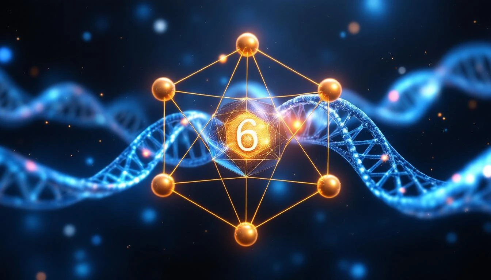

THE BRIDGE ELEMENT
Carbon is not just another element. It is the BRIDGE - the element that connects simple chemistry to the complexity of life. Its atomic number 6 is a perfect number (1 + 2 + 3 = 6), and its properties are unique.
Carbon Structure
CARBON (Z = 6)
├── Nucleus: 6 protons + 6 neutrons
├── Electrons: 6 (2 + 4)
├── Configuration: 1s² 2s² 2p²
└── Valence: 4 bonds (tetrahedral)
6 = 1 + 2 + 3 (perfect number)
6 = first perfect number
6 = the BRIDGE position
WHY CARBON IS SPECIAL
Carbon can form four bonds simultaneously, arranged in a perfect tetrahedron. This gives it unmatched versatility:
- Can bond with itself (carbon chains)
- Can form single, double, or triple bonds
- Can create rings (benzene, sugars)
- Can build 3D structures (proteins, DNA)
Tetrahedral Bonding
Carbon's 4 valence electrons create
4 bonding directions at 109.5° angles:
↗
C ←→
↘
↓
This tetrahedral geometry enables:
- Diamond (3D carbon network)
- Organic molecules (life chemistry)
- Buckyballs and nanotubes
Carbon bridges the simple to the complex. It is where chemistry becomes biology.
CARBON AND LIFE
All known life is carbon-based. This is not coincidence - it is fold geometry selecting for maximum complexity:
Carbon in Biology
DNA: Carbon backbone holding genetic code
Proteins: Carbon chains folding into enzymes
Sugars: Carbon rings storing energy
Fats: Carbon chains storing more energy
Carbon's 4-bond capacity enables
the molecular complexity needed for life.
The fold chose carbon to build consciousness.
THE 1729 CONNECTION
Carbon's position as element 6 connects to the 1729 structure:
Carbon's Fold Position
6 = First perfect number
= 1 × 2 × 3
= Position where fold enables complexity
1729 ÷ 6 = 288.166...
288 = 2 × 144 = 2 × 12²
Carbon sits at the geometric center
of the fold's capacity for structure.
Carbon is the bridge between the simple elements (H, He, Li, Be, B) and the complex chemistry that follows. It is where the fold becomes capable of building life.